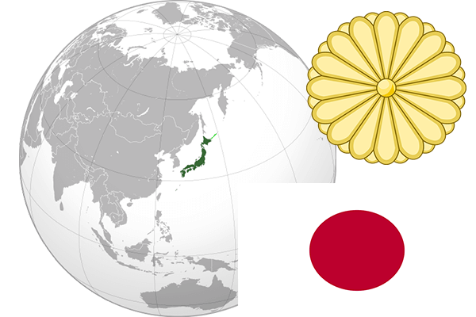

To`liq nomi: Yaponiya
Region: Sharqiy Osiyo
Qonunchilik shakli: Konstitutsion Monarxiya
Asos solingan: 11-fevral 660-yil
Poytaxt: Tokio
Maydoni: 377 944 km² (dunyoda 61 -o`rinda )
Chegaradosh davlatlari: Yo`q
Aholisi: 126 740 000 (dunyoda 10 - o`rinda, 2017 -yil roʻyxat)
Aholi zichligi: 336,3/km²
Aholining o`rtacha yoshi: 82,15 yil (85,6 ayollar, 78,7 erkaklar)
Rasmiy tili: Yapon tili
Dini: sintoizm, buddizm
Pul birligi: Yapon ienasi
Telefon prefiksi: +81
Internet domen: .jp
Xalqaro tashkilotlarga a`zoligi: BMT (1956 – yildan), Katta yettilik, Osiyo-Tinch okeani iqtisodiy hamkorlik tashkiloti
Dengiz va okeanlarga chiqishi: Tinch okeani, Sharqiy-Xitoy, Oxota, Yapon dengizlari
YIM: Butun: $ 4,395 trln, Jon boshiga $ 34,611 (2011 - yil roʻyxati)
Yirik shaharlari: Tokio, Iokogama, Osaka, Nagoya, Sapporo, Kobe, Fukuoka, Kioto, Kavasaki, Saytama